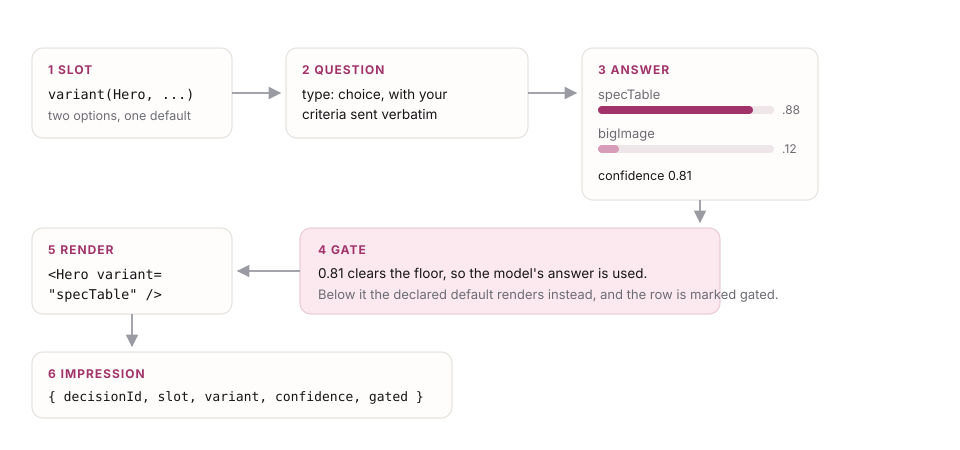

Concepts
Six ideas. If you understand these, the API is obvious.
A slot is a decision you are willing to delegate
A slot is a named point in your interface where more than one thing could reasonably go, and where which one goes there depends on something you do not know until a request arrives.
The hero of a product page is a slot: a spec table serves a comparison shopper and a photograph serves a browser, and both are correct pages. The submit button is not a slot; there is one right answer and you already know it. Most of your interface is not slots, and it should not be. A spec with forty slots is a spec nobody can reason about and a bill nobody wants.
Four primitives, and that is the whole vocabulary
| Primitive | Asks | You get back |
|---|---|---|
variant() | which version of this component | one option name, plus the probability of every option |
presence() | should this appear at all | a probability between 0 and 1 |
rank() | what order should these go in | a score per item, sorted by code |
intensity() | how strongly, along a scale you describe | a position on that scale |
Page layout is not a fifth primitive. It is a variant() whose chosen value becomes a class name rather than a component, which is exactly how the four layouts on the overview page work. Anything you were tempted to add as a fifth primitive is probably one of these four wearing a hat.
A criterion is documentation and a question at once
Every variant carries one sentence describing the situation it is for. That sentence is what a future colleague reads to understand why the variant exists, and it is also, verbatim, what the model is asked to match against.
This is the single highest-leverage thing in the framework and the thing most likely to be done badly. Criteria that describe situations discriminate. Criteria that describe degrees do not.
// Works. Two concrete, non-overlapping situations.
bigImage: "Judges by look and brand feel, reads little detail"
specTable: "Opens with numbers and compares models on specifications"
// Does not work. The model has nothing to match against.
bigImage: "A more visual hero"
specTable: "A more detailed hero"When criteria are vague the probability spreads evenly, confidence drops, the gate fires, and your declared default renders. The page stays correct and the model appears to do nothing. That failure is silent unless you look, which is why every gated decision is reported rather than swallowed.
A Decision is the whole answer, not just the winners
One request produces one Decision: an id, a hash of the spec that produced it, and for every slot the chosen value, the full probability distribution, the confidence, and whether the gate fired.
Keeping the losing options matters. It is what lets the explanation panel show a real distribution rather than a verdict, what lets you notice a slot that is always a coin flip, and what makes the impression event worth recording.
The assembler turns answers into a page, and it is ordinary code
The model answers questions. It does not decide what your page is. Between the two sits the assembler, a pure function with no I/O that applies your policy:
- Confidence gate. Below a floor, use the declared default instead of the model's pick, and mark the slot gated.
- Visibility. A
presence()under its threshold drops the block. - Ordering.
rank()scores sort descending, with ties broken by declaration order so the result is total and stable. - Structural caps. At most N panels, exactly one hero, a call to action that can never be ordered away.
- Fallbacks. A missing answer is never an error. It is the declared default.
A working default ships, so step three of the five is optional. When you do write your own, it is a function you can read, unit test without a network, and change without re-running inference.

Confidence is a control, not a score to display
Jev returns a confidence derived from how concentrated the probability is. All of it on one option is 1.0; spread evenly across four is near zero. The framework treats that as a switch: above the floor, act on the model; below it, act on your default.
Two things worth internalising. First, low confidence does not mean the model is wrong, it often means several options are genuinely fine, and for a harmless preference you may want to act anyway. Second, the right floor is a property of your data and your consequences, not a universal constant. The shipped default is a starting point to tune, and the prototype reports every time it fires so you can see whether it fires too often.
A decided interface is measurable, which is the point
Because every choice is a name rather than markup, an impression is just { decisionId, slot, variant } and a conversion is { decisionId, event }. Join them and you have the conversion rate of every variant of every slot, per segment, in the tool your funnels already live in.
This is the capability that does not exist on the generative side of the line, and it is why the four primitives are deliberately small. Read the measurement contract.